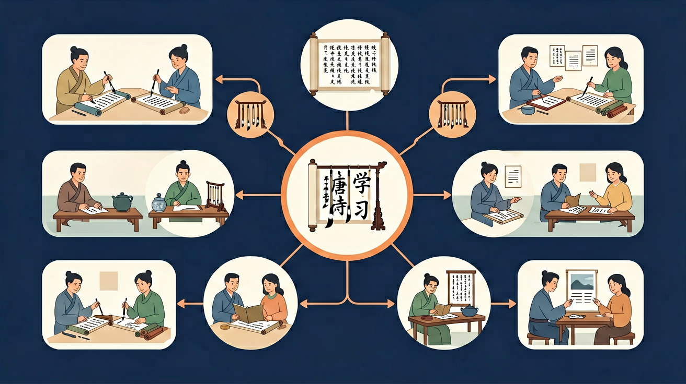

🌍 And（已知）：我们已经学过一些古诗
⚡ But（问题）：但古诗语言简洁，含义深刻，读起来常常似懂非懂
💡 Therefore（新知）：因此我们深入学习诗歌鉴赏，感受语言的韵律美和意境美
三年级语文 · 感受大唐诗意，领悟千年文韵

回忆：今天学了哪些关键词和规则？试着说出来。
用自己的话解释今天学的核心概念，不看书能说清楚吗？
用今天的知识解决一个实际问题，或写一个新例子。
把今天的知识与已有知识联系起来：有什么共同点？有什么区别？能不能自己创造一道新题？
先独立作答，再点选项查看对错与错因。
《春晓》中'夜来风雨声'主要表现春风的什么特点？
贺知章把春风比作剪刀是为了说明？
两首诗共同描写的是春天的哪个方面？
《春晓》中描写诗人听到春天声音的诗句是：____
答案：夜来风雨声
需准确填写原句
《咏柳》把春风比作能____的剪刀
答案：裁出细叶
需填写诗句后半部分
以下哪项最能说明唐诗'比喻'手法的作用？
对比分析《春晓》《咏柳》如何用不同方式描写春天
❓ 为什么诗人总爱写月亮？
❓ 背诗有什么用？考试又不考！
❓ 这首诗到底好在哪里呀？
学完这一课，这些问题你都能自信地回答。
用颜色标记诗中的名词、动词、形容词
结合插图和注释理解生僻字
对比李白和杜甫写山的诗句
想象'两个黄鹂鸣翠柳'的画面
用诗句描述校园春天的景色
✅ 展示唐代胡床文物图
💡 古今词义变化
✅ 对比'感时花溅泪'和'春风得意'
💡 缺乏情感分析框架
口诀：唐诗三百首，意象记心头
类比：背诗就像存钱罐，积累多了自然有用处
And：学生背过《静夜思》
But：不理解为什么'床前明月光'要这样停顿
Therefore：掌握五言诗'二三'节奏规律
唐诗像音乐有节奏！五言诗常分'2字+3字'，像拍手游戏。比如'白日依山尽'读作'白日--依山尽'，前2字写景（明亮的太阳），后3字说动作（靠着山落下）。这样读诗就像在跳舞。
🌍 就像我们跳绳时会喊'小花--跳进来'，古诗的节奏能让诗句更顺口。你发现了吗？妈妈哄睡时拍的节奏也是'哒哒--哒哒哒'呢！
'春眠不觉晓'怎么划分节奏？
And：能找出诗中的景物
But：不明白诗人为什么选这些景物
Therefore：理解唐诗'诗中有画'的特点
唐诗是文字摄像机！诗人会用3-5个景物拍'电影'。比如王维的'空山新雨后'，20个字里有山、雨、松、月、泉5个镜头。'空山'先拍大场景，'清泉'最后特写，就像我们拍照先拍全身再拍笑脸。
🌍 就像你春游拍照：先拍校门（大场景），再拍好朋友（人物特写），最后拍野餐（细节）。古诗也是这样组图的！
如果拍'两个黄鹂鸣翠柳'，第一个镜头应该是什么？
And：知道诗中写了什么
But：读不出诗人的心情
Therefore：通过关键词捕捉诗人情感
唐诗藏着心情密码！1个表情词+2个景物=心情配方。李白'举头望明月'的'望'字（持续看），配上'明月'和'故乡'，就像用emoji🌝+🏠组成了思乡表情包。记住：动词是心情开关，'卧'字多半悠闲，'惊'字肯定紧张。
🌍 就像你写日记'摔跤后妈妈给我吹伤口'，'吹'字能看出妈妈的心疼。古诗里'抚'、'叹'这些动作都是情绪放大镜。
从'低头思故乡'能看出李白什么心情？
And：能理解单首诗的意思
But：不会联想相关诗歌
Therefore：建立诗歌主题网络
唐诗是连锁店！同主题诗有'招牌菜'。所有思乡诗都有'月亮套餐'（明月+山+书信），比如王维'君自故乡来'和李白的'床前明月光'共用'明月'食材。边塞诗则是'沙漠套餐'（大漠+马+弓箭），记住3首就解锁一个系列！
🌍 就像麦当劳不管去哪都卖薯条，诗人写思乡也总用月亮。你发现了吗？《静夜思》和《月夜忆舍弟》是'月亮姐妹篇'呢！
下面哪首和'春风又绿江南岸'是同一主题？